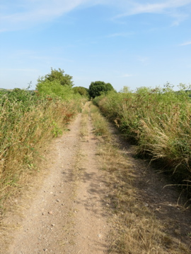

A singer-songwriter and memoirist on the road — a book nearing completion, a journey underway, seeking the ancient, the wondrous, and the place where the soul belongs. One dog. One campervan. An open road.
This is not a polished artist website. It is a place to follow one life as it moves — through the writing of a memoir, on a campervan expedition around Britain with a dog, across sacred sites and ancient landscapes and communities of people living differently.
There is a book nearly ready. There is music being made on the road. There is a second book forming from the research. And underneath all of it, a question being lived rather than asked: where is home? Not a house — a belonging.
If any of that resonates — you are welcome here. Pull up a chair.

A memoir of walking 437 miles across Britain on stilts in 2013 — following the ancient Michael and Mary ley lines from Norfolk to Cornwall. 56 days. 89 stages. A charity walk for Shelter that became something stranger and deeper than expected. The book is in its final editing now. This site is where it will launch.
Underway now: a campervan journey around Britain with Marley — one dog, much countryside, and no fixed itinerary beyond following what calls. Sacred sites, old friends, friends not yet met, wild places, intentional communities. Music made along the way. Research for the second book. And the long search for wherever it is the soul says: here.
There is an album — Symphony Of Man — that was made with care and never properly heard. It is here now. New music is forming from the road: live sessions, collaborations with people encountered on the way, recordings from the places themselves. The troubadour model — music as a living, moving thing, not a product with a release schedule.
"The land holds memory. You only have to walk slowly enough to hear it."
The album, the meditations, and more to come. All made with intention. All available to download now.
Writing from the road — sacred sites, landscape encounters, thoughts on walking and meaning. Sent when there is something worth saying.
Live music from the road — pub sessions, impromptu collaborations, fire-side sets. The troubadour at work, caught on the wing.
Off-grid communities, intentional living projects, and places that welcome the wanderer. A growing resource for those drawn to a different way.
The notice board, the guestbook, the campfire. A place to pause, leave your mark, and find others walking the same road.
A curated screen of sacred, musical, and ancient world film. Live streams, timeless classics, and films from the road.
A curated collection of fellow travellers — writers, musicians, seekers, makers — whose work is worth your time.
Who is behind this. Where the walk began. Where the road is heading next.
Occasional dispatches from the road. No noise — only what matters.
No selling. No noise. Unsubscribe any time.
Words sent from wherever the road has led — a stone circle in Cornwall, a pub in the Marches, a lay-by somewhere on Dartmoor with rain on the windscreen and the hills just visible through the mist.
Not a newsletter. A dispatch. The difference matters. A newsletter is scheduled. A dispatch arrives when something worth saying has happened.